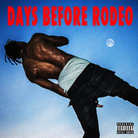

Click above photo to toggle artist bio. Taken by Active Magazine.
Travis Scott is an American musical artist from Houston, Texas. By the age of 20, Scott already garnered the attention of big name artists like T.I. and Kanye West. He would go on to work with artists such as Rihanna, Drake, Justin Bieber, and The Weeknd, as a rapper and/or record producer. In Scott's own music, he takes the new southern Hip-Hop style and elevates it to a higher artistic level. His music contains everything from aggressive rap verses to melodic choruses and bridges. Scott's music is leading the way for the new age of southern Hip-Hop.
Click on any cover art below to play a snippet from each respective project.
Travis Scott - Hell of a Night
Travis Scott - Mamacita (feat. Rich Homie Quan & Young Thug)
Travis Scott - 90210 (feat. Kacy Hill)
Travis Scott - Ok Alright (feat. ScHoolboy Q)